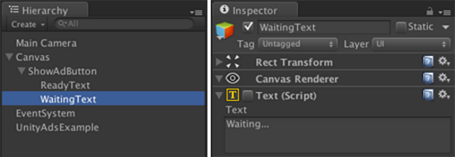
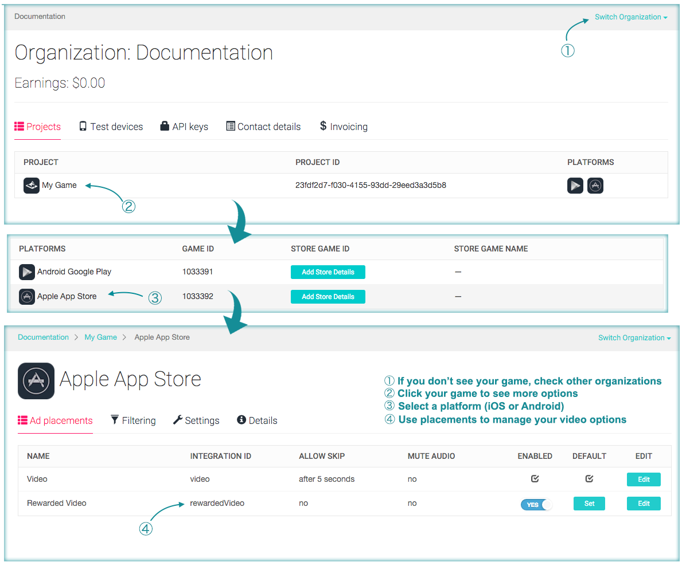

Enable Ads in Unity
Open, or create a new Unity project
...
Enable Ads in the Unity Services Panel
Select Window -> Unity Services
Select an Organization from the drop down menu
Click "Create"

Click "Ads", and enable the SDK in your project.

...
Select Window -> Unity Services
Select an Organization from the drop down menu
Click "Create"
Click "Ads", and enable the SDK in your project.

1: Start by creating a new Unity UI Button in your scene. This will also add a UI Canvas and EventSystem to your scene if they don't already exist.
2: Customize the UI Button for use with this example.

3: Create a non-interactable version of the button text.

4: Configure the UI Canvas to scale with screen size.

Note: Be sure to check out the Unity UI system Tutorials and Docs to learn more.
using UnityEngine.Advertisements;
public class UnityAdsExample : MonoBehaviour
{
public void ShowRewardedAd()
{
if (Advertisement.IsReady("rewardedVideo"))
{
var options = new ShowOptions { resultCallback = HandleShowResult };
Advertisement.Show("rewardedVideo", options); // Show an ad with the "rewardedVideo" placement
}
}
private void HandleShowResult(ShowResult result) // Called when the video ad ends
{
if (result != ShowResult.Skipped)
{
// Player has watched an ad - Provide the reward
// Give coins, lives, etc...
}
}
}
Your game should now display test ads when you call ShowRewardedAd() - Don't forget to disable Test Mode when your game goes live!
Additional examples and troubleshooting can be found in our monetization documentation.
For additional questions, check out the forum or contact Unity Ads Support.
It's important to inventivize users to watch ads. Incentivizing ads improves user engagement, and substantially increases revenue.
A good implementations genernally include one or more of the following:
From here, you can modify placements and other game-specific settings.

Additional information on placements can be found in our Documentation.
For additional questions, check out the forum or contact Unity Ads Support.